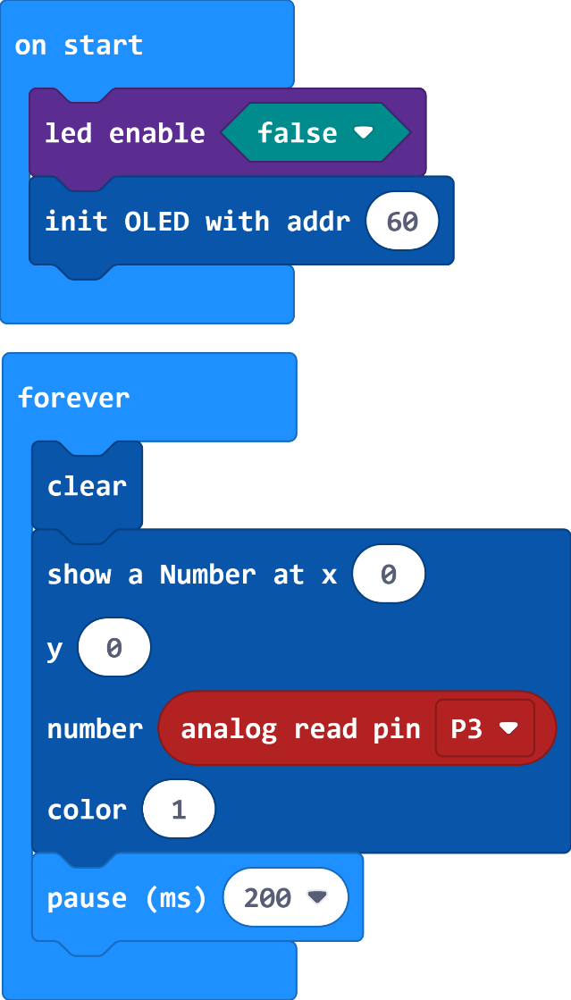

DeskPi MicroCar

Revision History
- Date Version Description
- July 4, 2023 V1.0 Initial release
Introduction
DeskPi MicroCar is a multi-functional and multi-purpose intelligent cart, Based on microbit. it has on-board motors, ultrasonic, and other sensors, programmed and controlled by Makecode, adoption of graphical programming language. This car especially suitable for students with zero or weak programming fundamentals. This car contains the introduction of the use of independent modules on the trolley and the introduction of comprehensive application cases, first learn the basics, and then comprehensive application, step by step, to enhance the students' hands-on and programming capabilities.
Key Features
- Designed for Microbit
- All modules are pre-wired
- 9 types easy-to-use modules
- 4 WS2812 RGB leds
- 0.96’’ 128x64 OLED Display
- Volume detection
- 2 Optical sensors
- 2 Programmable keys
- 2 Grayscale sensors
- Ultrasonic
- IR receiver
- 2 Motors
- Powered by 3 x #7 1.5V batteries, separate power control switch
- 2 servo expansion ports
- with 4 x M3 structural extension threaded holes
What’s Included
- 1 x Micro:bit
- 1 x DeskPi MicroCar
- 1 x OLED Desplay
- 1 x Utrasonic Sensor
- 1 x Remote Control
- 1 x Gimbal
- 2 x Wheels
- 2 x Motor Mounting Brackets
- 10 x M3*5 Bolts
- 1 x Micro USB Cable
Pinout Diagram
Assembly Instructions
a) Using 4 x M3*5 Bolts to fix the 2 x Motor Mounting Brackets b) Fixing of two wheels on the axle c) Using 2 x M3x5 Bolts to fix the Gimbal
Getting Started with Micro:bit and Makecode
Micro:bit is a microcontroller designed by the British BBC with ARM architecture. It has many on-board sensors, such as bluetooth, accelerometer, electronic compass, three buttons, 5 × 5 LED Dot Matrix Screen. It’s mainly used for youth programming education. MakeCode is the official platform for micro:bit, enabling easy coding for beginners and advanced users. Create interactive projects, games, and more with its user-friendly drag-and-drop or Python interface. The possibilities are limitless!
Individual Module Examples
This section contains of several example codes.
These examples illustrate the use of each module on MicroCar. Mastering the use of individual modules, so we can achieve better integrated applications. In this part, we need to make sure that the Micro:bit is always plugged into the female socket.

Open this address https://makecode.microbit.org/ , and start to code!
Hex File and Diagram Download
There are two zipped files which contains all demo codes and diagram pictures.
Download by click following items:
* Individual Module
* Integrated Application
or you can visit  GitHub repository by clicking Here: MicroCar
GitHub repository by clicking Here: MicroCar
RGB LEDs
DeskPi MicroCar has four WS2812 RGB LEDs pre-wired to Pin6 on the Miro:bit. n Extensions module, enter neopixel and select neopixel module.
 { width=80% }
Following the code below, you can modify the color of the LEDs.
{ width=80% }
Following the code below, you can modify the color of the LEDs.
Note: In this example, you need to make sure that the led enable is false.
Using the USB connection cable, connect Micro:bit to your computer, Refresh the page and it will connect automatically. Click download, and when it's done, you'll see the light-up effect.
- Note:
If it’s not connect automatically, try click
 and choose the first options to connect.
In this example, you need to make sure that the lattice screen is disable(Using RGB requires).
and choose the first options to connect.
In this example, you need to make sure that the lattice screen is disable(Using RGB requires).
OLED Display
DeskPi MicroCar has a 128x64 OLED Display. Plug it into the IIC interface.
In Extensions module, enter OLED and select OLED12864_I2C module.

Following the code below, You can write the characters you want to display. Download the program and your word will be displayed.
- Note:
In this example, you need to make sure that the
led enableisfalse(Using OLED requires).
Volume Detection
DeskPi MicroCar has one volume detection sensor pre-wired to Pin3 on the Miro:bit. Using OLED display to show it’s readouts.
Following the code below. Download the program and speak to the volume sensor and you’ll see the the changing numbers on the display.

Optical Sensors
DeskPi MicroCar has two opetical sensors pre-wired to Pin0 for the right one and Pin4 for the left one. Using OLED display to show it’s readouts.
Following the code below. Download the program and using the light exposure sensors, you’ll see the the changing numbers on the OLED.
Note:
In this example, you need to make sure that the led enable is false(Using opetical requires).

Button
DeskPi MicroCar has two push buttons pre-wired to Pin5 for the right one and Pin11 for the left one. Using OLED display to show it’s readouts.
Following the code below. Download the program and pushing buttons, you’ll see the the changing numbers on the OLED, finding out what state is “0” or “1”.

Grayscale
DeskPi MicroCar has two grayscale Sensors pre-wired to Pin2 for the right one and Pin1 for the left one. Using OLED display to show it’s readouts.
Following the code below. Download the program, placing the sensor on a black or white plane, you’ll see the the changing numbers on the OLED, finding out what are the readings on the different colors.

Ultrasonic
DeskPi MicroCar has a ultrasonic sensor pre-wired to Pin9 for Echo pin and Pin12 for the Trig pin. Plug it into the Ultrasonic interface. In Extensions module, enter HC-SR04 and select makerbit-ultrasonic module, OELD module is also needed.

Following the code below. Download the program, placing the sensor face objects at different distances. You’ll see the the changing numbers on the OLED, and the numbers means the distance between ultrasonic sensor and the objesct.

IR Receiver
DeskPi MicroCar has a IR receiver module pre-wired to Pin7.
In Extensions module, enter IR and select makerbit-ir-receiver module, OELD module is also needed.
The IR Receiver accepts key commands from the remote control.

Following the code below. Download the program, press different buttons against the IR Receiver and watch the code on the OLED, the code’s type is “0x00+6-bit character”，
such as the  button’s code is “0x00FFA25D”.
button’s code is “0x00FFA25D”.
Motors
DeskPi MicroCar has two motors, There are 2 signal wires for each motor, see the table below for details. The speed and direction of rotation of each motor can be programmed.


Following the code below. Download the program, left motor runs, change the difference of Pin13 and Pin14. The larger the difference, the faster the speed. Simply swap the values of the them to achieve rotation in the opposite direction. The right motor is just like this.

Interesting integrated application
Obstacle Avoidance Car
We can use ultrasonic to make a car that can automatically avoid obstacles, when there is no obstacle in front, the car moves forward, when there is an obstacle at a certain distance in front, the car decelerates, and when the obstacle distance is particularly close, the car settles down and rotates to the left/right for a certain distance and repeats the detection.

Light-catching Car
There two Optical Sensors on the Deskpi MicroCar, we can use that to control movement of the car. If the left optical readouts is larger than the right’s, the car turn left. If the both are small than a number, the car move forward. If the both are larger than a number, the car move backward.
Note: We need to get the different readouts of the two opticals in the normal lights, in this example, the left readout is 50 and the right one is 100.

Remote Control Car
DeskPi MicroCar has a remote control, and it can be used to control the car’s moving! we choose several buttons to control the car. Button on the remote control code Funtion:

Line follower Car
DeskPi MicroCar’s two grayscale Sensors makes it can follow a line to run, the readouts on dark areas is smaller than light areas. If the two sensors’s readout are all very large, that means they are on the line, the car move forward, if the left’s readout is smaller, that means the car need to move rigth, otherwise move left.
We can use dark-colored tape on the light-colored smooth ground or tabletop to stick out a track and run the car on it, it should be noted that the width of the tape should be between 2.5cm-3cm, and the track's can't have right-angled bends, and the bends should have a certain curvature.
Concluding Remarks
Congratulations on completing the learning of the DeskPi MicroCar, this manul gives the basic application examples and simple combination of applications, you can again based on the development of more and more interesting gameplay, such as adding sound and light effects, adding speed changes, etc., enjoy the design!